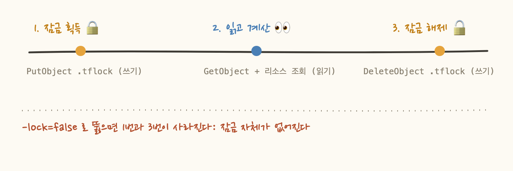
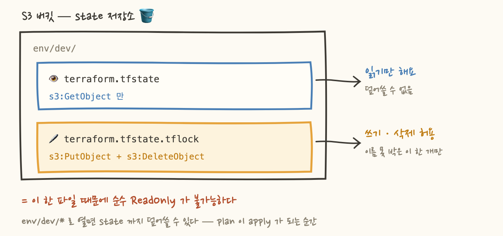

.tflock 제한과 apply 역할의 쓰기 경계는 그대로 남겨두었습니다.
무효가 된 건 “우리는 파일 이름으로 못 박아서 안전하다”는 자랑이고,
1·2·4·5장은 그대로 유효합니다.Terraform CI 에는 환경마다 역할이 두 개 있어요. 리소스를 실제로 바꾸는 apply 용과, PR 에서 변경 계획만 계산하는 plan 용입니다. PR 을 올리는 것만으로 인프라가 바뀌면 안 되니까 나눕니다. 그럼 plan 쪽은 계산만 하니 ReadOnlyAccess 한 장이면 끝날 것 같죠. 그렇게 만들면 첫 PR 부터 plan 이 실패해요.
실패 메시지는 state 잠금을 획득할 수 없다는 내용입니다. state 는 Terraform 이 "내가 만든 리소스가 지금 이렇게 생겼다"를 적어두는 파일이고, 우리는 그걸 S3 버킷에 둬요. 읽기만 하는 명령이 왜 그 파일을 잠그죠? "읽기 전용 역할"이라는 이름이 무엇을 감추고 있는가가 오늘의 질문입니다.
plan 이 읽는 건 세 가지예요. 코드가 원하는 상태, state 에 적힌 상태, 그리고 실제 리소스의 지금 모습입니다. 여기까지는 전부 읽기입니다. 그런데 Terraform 은 plan 을 시작할 때 state 를 잠가요.
기준선 때문이에요. plan 이 계산하는 동안 다른 실행이 같은 state 를 갱신하면, 내가 보고 있는 diff 는 이미 존재하지 않는 상태와의 차이가 됩니다. 그래서 Terraform 은 state 를 다루는 명령이 기본적으로 잠금을 잡도록 통일했어요. plan 도 예외가 아니고요.
그리고 Terraform 1.10+ 의 S3 네이티브 잠금(use_lockfile = true)은 그 잠금을 state 파일 옆에 <state 키>.tflock 객체로 만들었다가 지웁니다. 만들려면 s3:PutObject, 지우려면 s3:DeleteObject 가 필요해요. ReadOnlyAccess 로는 둘 다 안 됩니다. 순수 ReadOnly 역할로 plan 을 돌리는 건 구조적으로 불가능해요.

plan 이 잠금에서 실패했을 때 사람이 먼저 하는 일은 정해져 있어요. -lock=false 를 붙이는 겁니다. 한 줄 붙이면 plan 이 통과하고 PR 이 초록불이 됩니다. 문제는 그 다음이에요. 왜 붙었는지는 붙인 사람만 알고, 그 사람도 두 달 뒤엔 잊어요. 한번 남은 플래그는 언젠가 복사돼서 apply 쪽으로 넘어갑니다. 두 apply 가 겹치는 순간 state 가 깨지고요.
가장 위험한 우회는 "일단 되게 만드는" 우회예요. 권한을 잘못 짜는 비용은 "plan 이 한 번 실패한다"가 아니라 "안전장치가 영구히 꺼진다" 로 계산해야 해요. 도구가 정당하게 요구하는 동작을 정책이 막고 있다면, 고칠 쪽은 도구가 아니라 정책입니다.
-lock=false 가 있다면 누가 왜 붙였는지 커밋을 찾아보세요. 답이 안 나오면 그건 권한 설계가 남긴 흉터예요. 우리 워크플로에는 그 플래그가 없고 전부 -lock-timeout=5m 이에요. 잠금을 건너뛰는 게 아니라 5분까지 기다렸다가 포기하는 쪽입니다.
state 는 환경별로 env/dev/, env/prod/ 프리픽스에 나눠 두었어요. dev plan 역할은 자기 프리픽스 밖을 볼 일이 없죠. 그래서 최종 형태는 "인프라 전반 읽기 + 자기 프리픽스 안의 잠금 파일 하나만 쓰기" 입니다.
핵심은 마지막 줄이에요. 쓰기 권한의 대상이 state 가 아니라 잠금 파일이라는 점입니다. 귀찮다고 env/dev/* 로 열면 같은 프리픽스의 terraform.tfstate 까지 덮어쓸 수 있게 되고, plan 역할은 조용히 apply 역할이 됩니다. 파일 이름 한 개 차이로 "계획만 세우는 역할"과 "바꿀 수 있는 역할"이 갈려요.

예전에는 S3 백엔드의 state 잠금에 DynamoDB 테이블이 필요했어요. 부트스트랩에 테이블이 하나 더 붙고, 권한도 S3 와 DynamoDB 두 서비스에 걸쳐 써야 했죠. 1.10 의 네이티브 잠금은 그걸 없앴어요. 만들 리소스가 하나 줄고, 권한도 S3 안에서 끝납니다.
좋은 변화인데 대가가 하나 있어요. 잠금이 S3 객체라는 걸 모르면 위의 정책을 아예 쓸 수 없다는 점입니다. use_lockfile = true 한 줄은 편하지만, 그 아래에서 무슨 객체가 생기고 지워지는지를 알아야 권한을 좁힐 수 있어요. 추상화가 편해진 만큼, 그 아래를 모르면 권한을 못 짭니다.
"읽기 전용 역할"이라는 이름은 그 역할이 실제로 무엇을 하는지 말해주지 않아요. 권한은 이름이 아니라 그 역할이 실행하는 명령이 무엇을 건드리는지로 설계해야 해요. 이름이 읽기인데 쓰기 권한을 요구하는 명령은 여기저기 있어요. Athena 의 SELECT 는 결과를 S3 에 내려써야 하니 s3:PutObject 가 필요하고, CloudFormation 의 변경 집합은 미리보기인데도 만드는 것 자체가 쓰기 API 예요.
그래서 순서가 바뀌어야 해요. 역할 이름에 어울리는 정책을 찾는 게 아니라, 그 역할이 돌릴 명령을 한 번 실행해 보고 무엇이 만들어지는지 세는 것부터 시작하는 거죠. 우리 plan 역할이 이름은 읽기 전용인데 파일 하나를 쓸 수 있는 비대칭이 된 건 그래서예요.
-lock=false 로 우회하고 그 우회가 영구화되므로, "인프라 전반 읽기 + 자기 .tflock 하나만 쓰기"라는 비대칭 형태로 만든다.